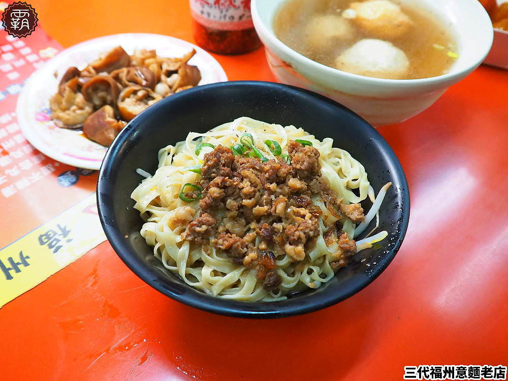
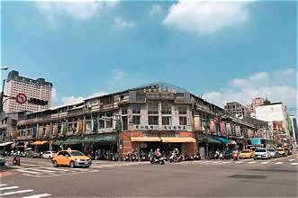
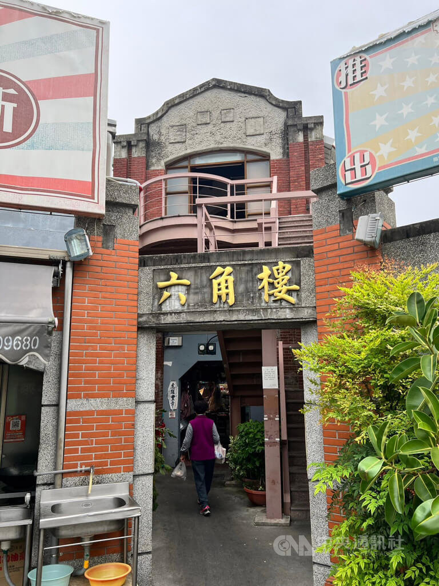

LOCAL FAVORITEA JOURNEY THROUGH LOCAL CULTURE
走進市場，
拾起城市的時光。
一座市場，承載的不只是日常生活，
更是城市的記憶、飲食文化與人情味。
TAICHUNG SECOND MARKET · SINCE 1917
LOCAL
MEMORY
CULTURE
QUICK ACCESS
開始你的市場探索
選擇感興趣的主題，快速認識第二市場。
ABOUT THE MARKET
不只是市場，更是城市生活的縮影。
在熱鬧的街區裡，感受傳統市場獨有的生活節奏。

SECOND MARKET
MARKET INTRODUCTION
傳統與日常交織的地方風景
臺中第二市場位於臺中市中區，是一處具有歷史特色的傳統市場。 市場內聚集了各式各樣的攤商，從熟悉的傳統小吃、日常食材， 到充滿地方特色的店家，都能在這裡找到。
對許多人而言，市場不只是購買食物的地方， 更是居民交流、保存飲食文化與傳承生活記憶的重要空間。
繼續閱讀市場故事 →
1917
市場發展起源年份
中區
臺中市核心街區
在地
傳統飲食與生活文化
日常
居民生活的重要場所
HISTORY & MEMORY
歲月留下的痕跡，
成為城市的故事。
第二市場的發展與臺中市區的城市變遷息息相關。 從早期的市場生活，到今日成為在地居民與外地遊客 都會造訪的美食據點，市場持續保留著傳統生活的樣貌。
市場建築與攤商文化，記錄了不同世代的生活方式， 也讓人們能透過食物與空間，認識臺中的地方特色。
觀看市場影像 →
A PLACE FULL OF MEMORIES
LOCAL FOOD
走進市場，尋找熟悉的好味道。
從傳統小吃到經典料理，每一口都是在地生活的縮影。
DISCOVER MORE
市場裡，還有更多值得發現的細節。
除了美食，也別錯過市場裡的建築、攤商與生活文化。
01
建築與空間
觀察市場建築特色，感受傳統空間與現代生活交織的樣貌。
02
攤商與人情味
從攤商的日常互動中，認識傳統市場的人際關係與生活溫度。
03
地方飲食文化
透過食材、料理與小吃，了解市場與臺中在地飲食的連結。
PHOTO JOURNAL
用影像，收藏市場的每個瞬間。
每張照片都是一次走進第二市場的紀錄。
HOW TO GET HERE
規劃你的第二市場之旅。
出發前先確認交通方式，讓旅程更加順利。
大眾運輸
可搭乘前往臺中市中區的公車，再依照下車地點步行前往市場。
自行開車
可使用導航搜尋「臺中第二市場」，並事先確認周邊停車場資訊。
步行探索
若在中區附近活動，也可以安排步行路線，順道探索周邊街區。
TRAVEL TIPS
讓每一次造訪，
都成為美好的市場體驗。
走訪傳統市場時，不妨放慢腳步，觀察周遭環境，感受攤商與居民的日常。
01 建議事先確認店家營業時間。
02 市場人潮較多時，請留意隨身物品。
03 購買商品前可先確認價格與份量。
04 拍攝店家或民眾前，記得先取得同意。
05 自備購物袋，減少一次性塑膠使用。